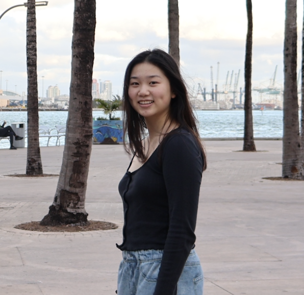
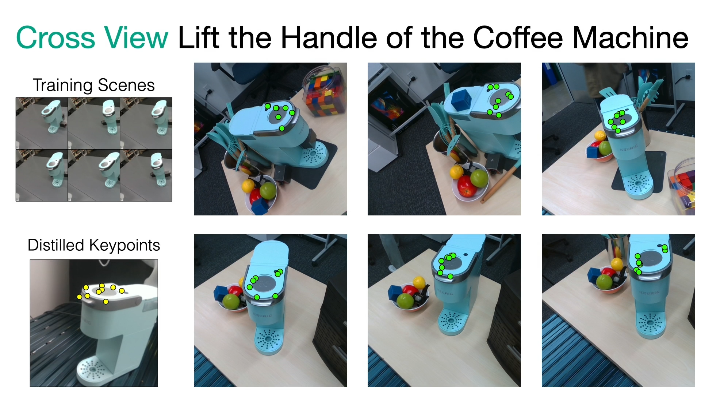
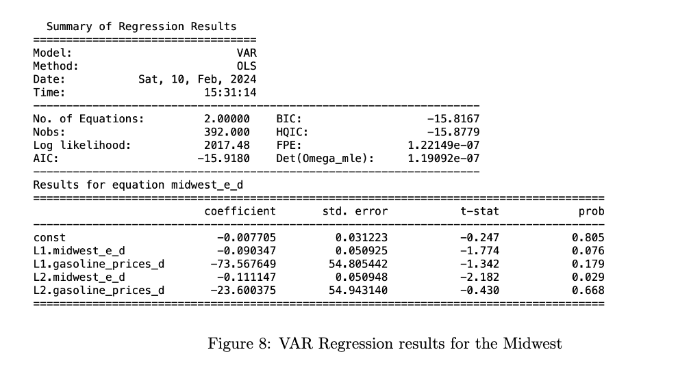
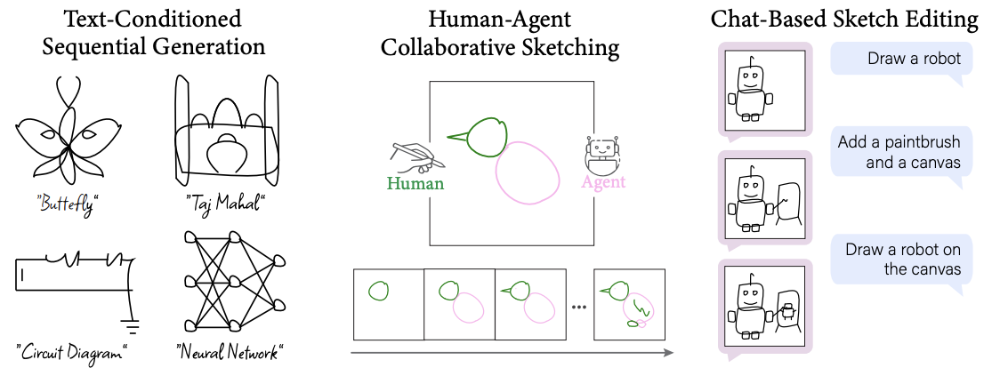
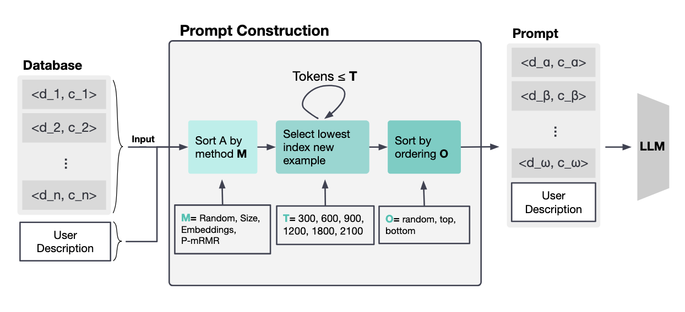
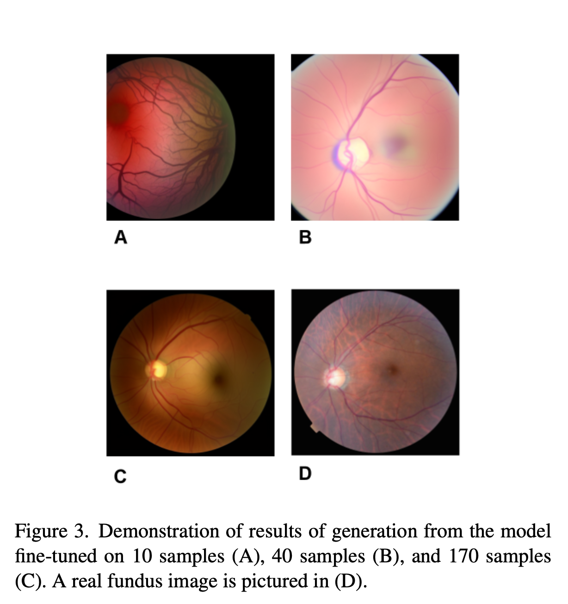

|
Jasmine Shone
Hi! I'm Jasmine Shone, a current student at MIT. This summer, I was a research intern at the Learning and Intelligent Systems lab at MIT under Professor Kaelbling and Professor Lozano-Perez, working on robots that are better able to transfer knowledge from training data to real-world environments. My current primary interest is in enabling better and more efficient learning, both through intrinsic methods (e.g. representations, generalization, knowledge distillation, data-efficient learning) and extrinsic methods (e.g. quantization, parallelization, sparsity).
I have experience building projects in Computer Vision, NLP, medical ML, deep learning, and robotics, as well as experience with data science and full stack development. In my free time, I enjoy singing/composing music, as well as writing short stories/making videogames.
Work Experience /
Awards and Accolades /
Research
Email /
Github
|

|
Work Experience
For a full list of my work experiences, please see my LinkedIn profile.
Meta - Summer 2025
Working on scalability for Instagram, utilizing primarily Django and Hack.
Hudson River Trading - Winter 2025
4-Week Winter Internship in Core (SWE) & Algo Development (QR)
Core (SWE): Completed five C++ projects focused on building infrastructure for live trading systems. Gained hands-on experience with performance optimization techniques, including efficient data structures and memory management. Actively participated in code reviews to improve code quality and robustness.
Algo Development: Designed, programmed, and deployed a live trading bot for Brazilian equities that achieved net positive returns in production. Applied data science techniques to train predictive models, evaluate performance metrics, and effectively communicate insights to stakeholders.
Learning and Intelligent Systems Lab @ MIT CSAIL - Summer 2024
Making robots generalize across varying object poses, camera views, and object instances with only 10 demonstrations.
|
Awards and Accolades
| 2024 |
HackMIT Challenge Track Winner |
| 2024 |
Citadel Women's Datathon First Place Report |
| 2024 |
Honorable Mention MIT Web.Lab Web Development Competition (Top 7) |
| 2023 |
Atlas Fellow |
| 2023 |
Regeneron STS Scholar |
| 2022 |
Research Science Institute Scholar |
| 2023 |
2x AIME Qualifier, Top 6 in Ohio HS Mathematics Invitational Olympiad Cipher Round |
| 2022 |
Scholastic Arts and Writing National Gold and Silver Medal in writing |
| 2022 |
NSDA Extemporaneous Debate National Runner Up |
| 2021 |
FPS Scenario Writing (Sci-Fi competition) 3rd, 7th internationally |
|
Research
I'm interested in computer vision, deep learning, generative AI, and image processing. Most of my research is about inferring the physical world (shape, motion, color, light, etc) from images, usually with radiance fields. Some papers are highlighted.
|
|

|
Keypoint Abstraction using Large Models for Object-Relative Imitation Learning
ICRA 2025, CoRL LangRob Workshop Best Paper 2024
project page
/
arXiv
By utilizing priors from Vision-language models and image features from large classification models to create a novel keypoint abstraction for robot actions, we generalize effectively across object poses, camera viewpoints, and object instances with only 10 demonstrations.
Contributions:
Trained multimodal models utilizing pointcloud encoders, object-wise transformers, and vision foundation models, improving evaluation performance by 27.5%
Created and designed keypoint proposal pipeline with specialized VLM prompting SAM, furthest point sampling, mark-based prompting, RANSAC, and point cloud clustering
|
|

|
The Correlation of Regional Gas Prices with Unemployment
Citadel Women's Datathon Winning Report 2024
Are fluctuations in gas prices pre-
dictive of unemployment rates and how do regional differences in mass transit and gasoline production
affect this trend?
Contributions:
Coming up with the initial research question + insight to use multiple additional datasets beyond the ones we were provided in the competition. Also worked on most of the stats/modelling work (Granger Causality, ADF, VAR modelling).
|
|

|
SketchAgent: Language-Driven Sequential Sketch Generation
CVPR 2025
project page
We introduce SketchAgent, a novel framework for generating sequential sketches from language prompts. By leveraging large language models and diffusion models, we achieve high-quality sketch generation that captures the essence of the input text.
Contributions:
Worked on moving the LLM inference pipeline to a locally hosted version of Llama Vision 3.2 11B and Llama 3.2 90B. Learned about quantization, multi-gpu inference, and prompting techniques.
|
|

|
Systematic Optimization of App Generation Few Shot Learning for Large Language Models Trained on Code
Research Science Institute, Regeneron Talent Search Top 300, Acta Scientific 2023
paper/
Regeneron Talent Search version
We create an LLM in-context learning pipeline to systematically
optimize (1) maximum token length of the prompt, (2) the mechanism of choosing
few-shot examples, and (3) the ordering of few-shot examples to generate applications.
Contributions:
Developed the p-mRMR algorithm and prompt creation framework, designed and wrote an evaluation suite of test applications and performed manual error evaluation of generated apps.
|
|

|
Validating the Usage of Stable Diffusion Foundational Models on Generating
Glaucoma Fundus Images in Low-Data Settings
Computer Vision Final Project
We improve stable diffusion's ability to generate high-quality fundus images of the eye, specifically for glaucoma, by finetuning on an extremely small dataset of 170 images.
Contributions:
Worked on designing the project/experiments, training the model, doing evals with resnet, and baselines (GANs)
|
This website is a modified version of Jon Barron's. Source code.
|
|
{kind=link}